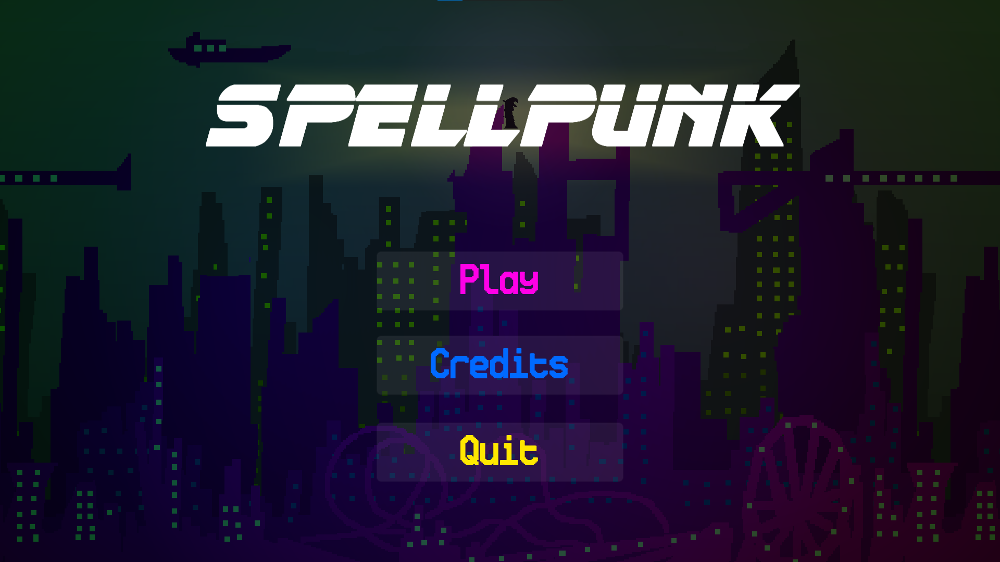

This is Raft Fighter, a project I helped make in MI445 along with some other classmates. On this project, I was responsible for the player sprite on the island levels, the shark and turtle enemies, the UI and the shop menu. This was the first full, complete game project I made with a team in college and I am quite proud of the spritework I did, especially in the shop and enemies. Click on the picture to visit the itch.io page that it is housed on.

This is a link to my Github account which houses every project I created and completed for my MI349 class, including the repository for this website! If you're interested in viewing any of those projects click the Github logo to go straight to my Github page.
This is Spellpunk. In terms of art the only thing I worked on for this game was the player character. Primarily on this project I worked as the sole level designer. I created the concept of choosing your spell and how that effects what order you complete the game in. Click on the picture to visit the itch.io page that it is house on.